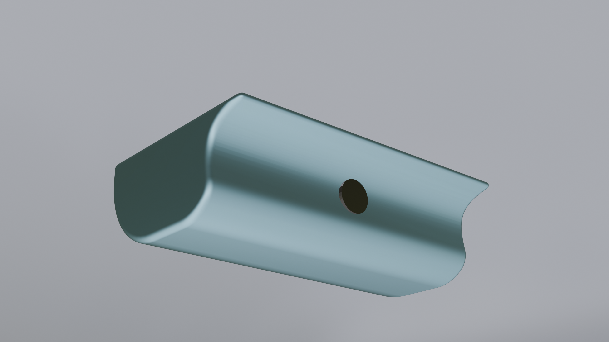
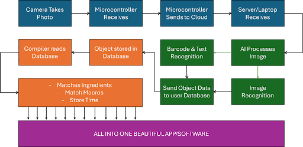
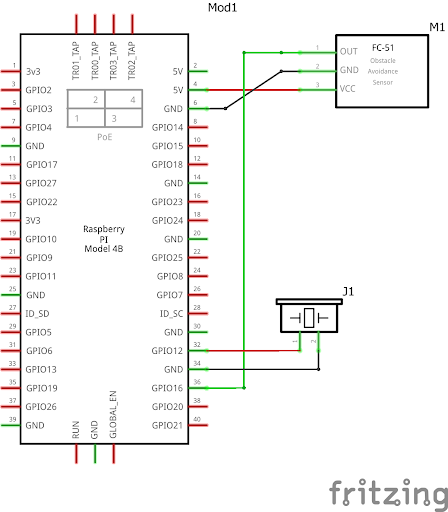
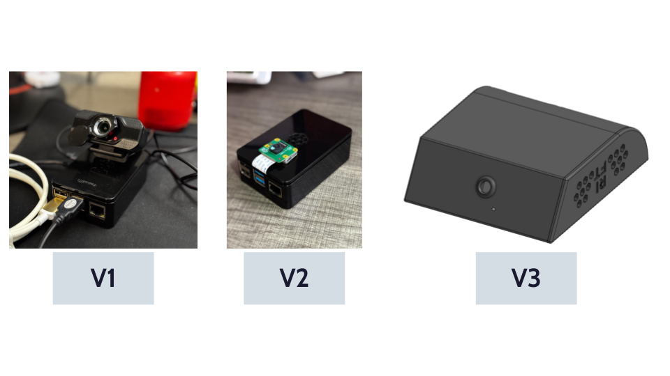
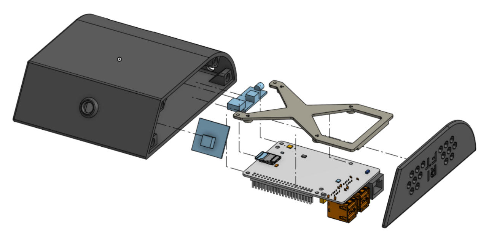

Most people don't throw food away on purpose. They just forget it's there. A container of leftovers slides to the back of a shelf, a bag of produce gets buried behind the milk, and three days later it all goes in the trash. RIFT AI is a small camera that mounts inside your fridge and automatically tracks everything in it — what you have, how much, and when it expires — so the food lifecycle stops being something you have to manage in your head.
This is a four-person cross-functional project. My role covers hardware: the physical device, the enclosure, the electronics, and the system that connects the camera to the cloud. My teammates handle the AI model and server pipeline, and the mobile app. What follows covers the hardware side of the build in detail.

The Problem Worth Solving
Existing solutions all have real problems. Manual meal-planning apps require you to log everything yourself, which almost nobody keeps up with consistently. Smart fridges cost thousands of dollars and only work if you bought that specific model. Spreadsheet trackers need even more discipline than the apps. None of them give real-time, personalized guidance based on what is actually sitting in front of you.
The people who feel this most are novice cooks — who don't always know how to build a meal from a random set of ingredients — and busy households where nobody has time to plan ahead. The result is the same either way: wasted food, poor nutrition, and the daily friction of figuring out dinner from scratch. The RIFT system eliminates that friction by making the fridge itself aware of its own contents.
System Architecture
The system splits into three layers: the IoT device, the cloud server, and the mobile app. The device's only job is to capture images and upload them over WiFi. All computation happens in the cloud, which keeps the device cheap, thermally simple, and easy to update without touching the hardware. A 2–3 second round-trip processing time is acceptable — nobody needs millisecond feedback when they're putting groceries away.

Detection runs a four-level hierarchy, falling back to the next method only when the previous one cannot identify an item. Receipt scanning handles known store items before they even go into the fridge. Barcode scanning covers packaged goods via the OpenFoodFacts database. OCR reads text labels and expiration dates using the Google Vision API. Image classification via YOLOv5 handles produce and anything unlabeled. Each step is faster and more reliable than the next — image recognition only runs when everything simpler has already failed.
Electronics and Component Selection

The electronics stack is intentionally minimal. The core components are a Raspberry Pi 5, a Pi Camera Module 2, a photoresistor paired with a digital conversion board to act as a light sensor, and a buzzer for user feedback. The light sensor is the key trigger: when the fridge door opens and ambient light increases past a threshold, the Pi wakes and starts a capture sequence. When the door closes and light drops, it returns to idle. This event-driven approach keeps average power draw low without any complex scheduling logic.
Version A uses the Raspberry Pi 5 for its GPIO flexibility, camera interface support, and headroom for future onboard processing. Version B swaps in a Pi Zero 2W — a much smaller footprint and meaningfully lower power draw, at the cost of some flexibility. A future cost reduction pass may replace the Pi Cam 2 with a standard ESP32 camera module, which is significantly cheaper in volume.
The buzzer gives simple audio confirmation — a beep on wake, another on capture. It is a small feature, but it matters for user trust: people need to know the device is doing something. A future revision replaces it with a small speaker capable of more descriptive alerts.
Housing Design

The enclosure had a tight set of competing constraints. It needed the smallest possible footprint — fridge real estate is limited and the device cannot get in the way of normal use. It needed to look intentional and consumer-grade, not like a breadboard in a box. And it had to be 3D printable without supports in a vertical orientation, to keep fabrication simple and repeatable at small volume.
Version A, housing the Pi 5, is 130 × 110 × 40 mm. Version B for the Zero 2W is 114 × 55 × 35 mm. Both use a vertical configuration to maximize print volume per plate and reduce print time. Airflow openings are incorporated into the shell geometry — the Pi generates real heat even inside a cold enclosure, and passive airflow matters for long-term reliability. Normal-fit interfaces are toleranced to 0.2 mm. Press-fit features — primarily the magnet pockets — are held to 0.1 mm for a reliable interference fit without cracking the shell.

Mounting System
The device attaches via magnets embedded in a re-stickable adhesive pad — the same general concept as modern dashcam mounts. A small bracket adheres to the fridge interior surface; the device snaps magnetically onto it. This means no permanent modification, easy removal for battery swaps, and simple repositioning if the user wants to change the viewing angle. The magnet spec is sized to hold through the vibration of a compressor cycling repeatedly — which rules out weaker options that might work in bench testing but fail after weeks of real use.
"The fridge door slams multiple times a day. Whatever holds the device in place has to handle that without loosening over months — which ruled out adhesive-only mounting pretty fast."
Power Strategy
The MVP is hardwired. The Pi 5 requires a minimum 25W supply; the Zero 2W variant needs 12W. Routing a flat ribbon cable out through the door seal is a minor inconvenience, but it eliminates the battery design problem entirely during initial development. Flat cable geometry also minimizes the gap at the seal, keeping cold air loss low.
The production target is a hot-swap battery system where the user can swap batteries without powering the device down — no lost state, no reconfiguration. At 5.3W max draw, a 10,000 mAh cell provides approximately 9 hours of operation. That covers a full day of normal door-opening events with comfortable margin. The charge circuit and battery protection design are slated for the next hardware revision.
The Detection Pipeline
The Flask server — built by my teammate AK — accepts POST requests from the Pi on two routes. The /lookup endpoint receives a barcode string and queries OpenFoodFacts, returning product name, brand, serving size, and full macro and micronutrient data. The /process_image endpoint receives an uploaded image and runs the multi-stage identification pipeline.
On an image submission: the server first runs OCR via the Google Vision API and draws bounding boxes around words detected in the central image region. If brand and product name are found, it searches OpenFoodFacts and ranks results by image histogram similarity to find the best match. If OCR fails to find a usable match, the server falls back to a YOLOv5 classifier that returns the top three predicted food items with confidence scores. The full response — classification results, OCR output, matched product data, and annotated image URL — is returned as JSON and consumed by the mobile app.
App Features
The companion app is where the hardware investment pays off for the user day-to-day. Recipe suggestions pull from current fridge inventory and prioritize whatever is closest to expiring, filtered against dietary restrictions and a monthly grocery budget. Expiration alerts fire 1–2 days before items go bad — early enough to act on, not so early that the notifications become noise. The app tracks macros and micronutrients, generates shopping lists for missing ingredients, and integrates with Instacart and Amazon Fresh for one-tap grocery delivery or pickup.
A feedback loop lets users confirm or correct the system's food identifications directly in the app, improving classification accuracy over time. A gamification layer awards points for consistent tracking and minimal food waste, with social sharing for recipes and achievements. All data collection is opt-in. The business model runs on a free tier covering core functionality, with paid upgrades for advanced nutrition analytics and personalized meal planning.
Open Problems and Next Steps
The biggest open hardware question is WiFi reliability inside a metal fridge enclosure. Initial tests with the Pi 5's onboard antenna show acceptable signal with the door open, but strength degrades meaningfully when the door is closed. A future revision will likely route the antenna outside the fridge via a short coaxial pigtail through the door seal — the same approach used in some commercial IoT fridge sensors — to maintain a stable connection regardless of door position.
On the hardware roadmap: hot-swap battery system and protection circuit, speaker upgrade, IR sensor integration for detecting whether items are going in or out of the fridge, and a second round of housing iterations to tighten the form factor further. On the product side, the team is running user surveys to validate which app features drive the most value before locking in the subscription tier structure and beginning a broader beta rollout.